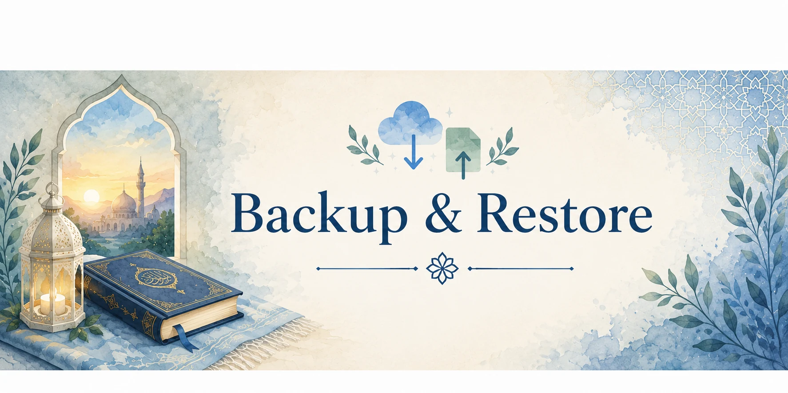

Duaa Data
Daily tracking history and Duaa reading preferences. Qur’an data is not included.
Protect your progress and move it between devices.

Data tools
Save a copy of your progress to this device, or restore a previous Ummiby Companion backup.
Choose the part of Ummiby Companion you want to save.
Daily tracking history and Duaa reading preferences. Qur’an data is not included.
Qur’an journey, workspace, reminder, and Ramadan data currently stored on this device. Duaa data is not included.
Creates one backup containing both Duaa and Qur’an data, plus recognized app-wide data.
Select an Ummiby JSON backup. The app will identify what it contains before anything is changed.